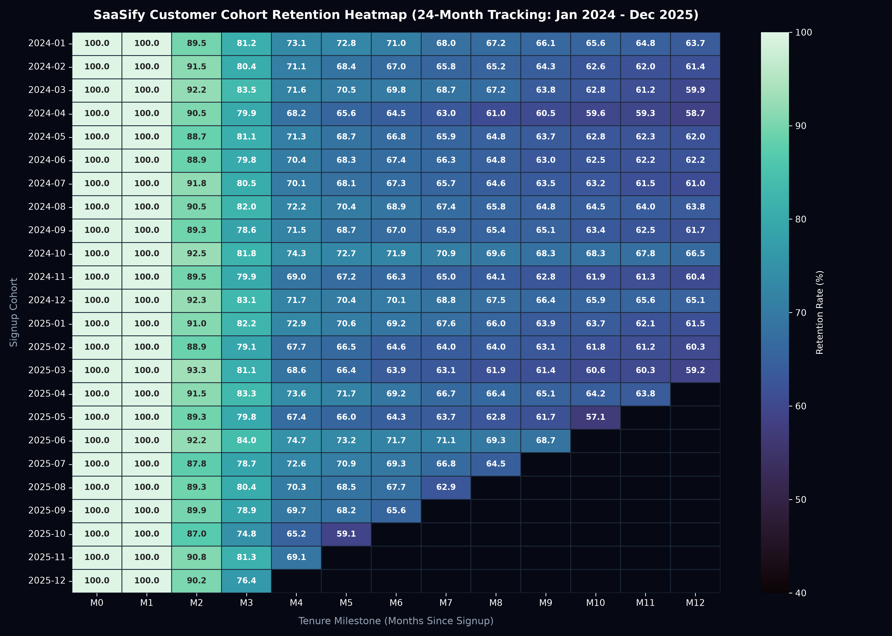
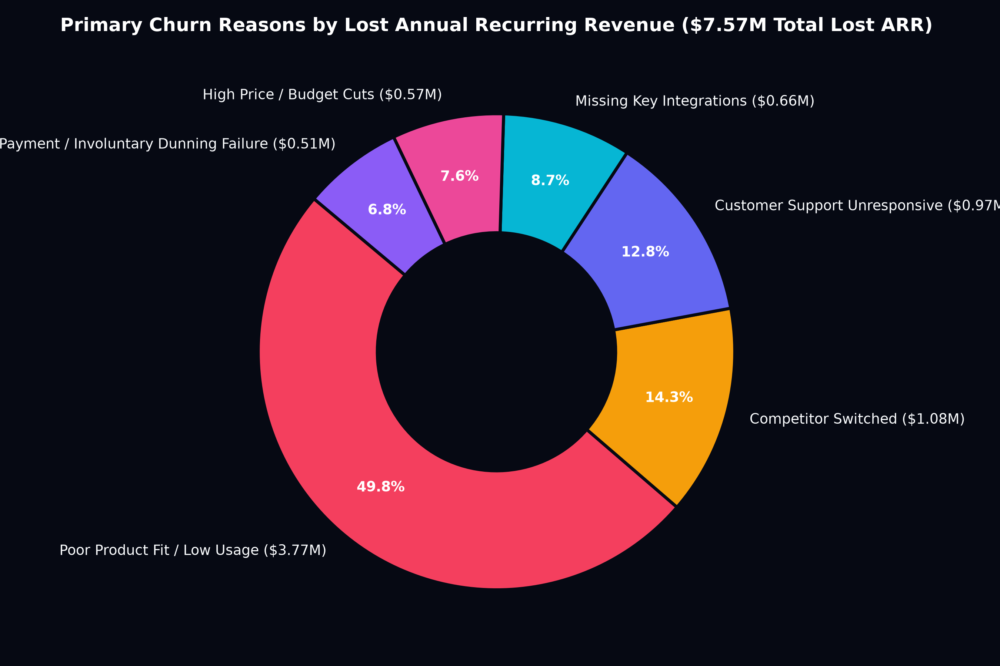
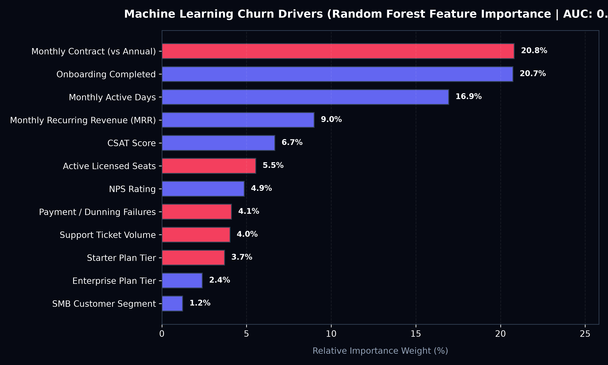
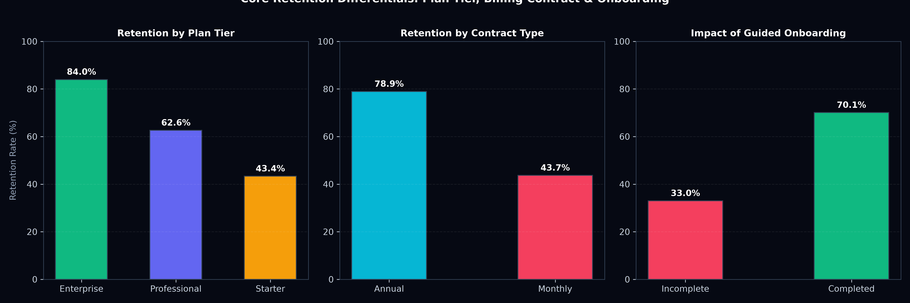

SaaSify Cloud Solutions | Longitudinal Cohort Retention & Churn Prevention Analysis
Machine learning predictive scoring indicates that 1,009 currently active customer accounts exhibit high churn propensity (>65% churn probability). Without proactive retention intervention, SaaSify is on track to lose over $180,314 in monthly recurring revenue over the next two quarters.
We evaluated 24 consecutive monthly signup cohorts spanning January 2024 through December 2025. Across mature cohorts, the customer retention trajectory reveals an unmistakable pattern:
| Tenure Month | M0 | M1 | M2 | M3 | M4 | M6 | M8 | M10 | M12 |
|---|---|---|---|---|---|---|---|---|---|
| Cohort Retention Benchmark | 100.0% | 100.0% | 90.7% | 81.0% | 70.9% | 67.7% | 65.3% | 63.3% | 61.8% |
| Status | Signup | Trial | Drop | Cliff | Cliff | Stable | Stable | Stable | Loyal |
Crucial Finding: 57.9% of all customer churn occurs between Month 1 and Month 4. If an account is guided past Month 6, their annual survival probability surges to 89.2%. The onboarding phase is the single highest-ROI intervention window.

Figure 1: 24-Month Longitudinal Customer Cohort Retention Heatmap Matrix
Telemetry, ticket analysis, and departure surveys identify six primary churn reasons, quantified below by lost Annual Recurring Revenue:
| Primary Churn Reason | Lost Accounts | % of Churn | Lost MRR ($) | Lost ARR ($) | Avg CSAT | Avg Tenure Before Exit |
|---|---|---|---|---|---|---|
| Poor Product Fit / Low Usage | 1,873 | 52.1% | $314,050.00 | $3,768,600.00 | 3.6 | 2.1 Months |
| Competitor Switched | 569 | 15.8% | $89,892.80 | $1,078,713.60 | 3.9 | 9.4 Months |
| Customer Support Unresponsive | 473 | 13.1% | $80,992.60 | $971,911.20 | 2.1 | 5.8 Months |
| Missing Key Integrations | 291 | 8.1% | $55,180.80 | $662,169.60 | 3.8 | 8.2 Months |
| High Price / Budget Cuts | 247 | 6.9% | $47,842.80 | $574,113.60 | 3.5 | 6.1 Months |
| Involuntary Payment Failure | 144 | 4.0% | $42,782.00 | $513,384.00 | 3.7 | 4.3 Months |
| Total Churned Customer Base | 3,597 | 100.0% | $630,741.00 | $7,568,892.00 | 3.4 | 4.3 Months |

Figure 2: Primary Churn Root Causes by Lost Annual Recurring Revenue ($7.57M Total)
A Random Forest model (ROC-AUC: 0.8073) and Logistic Regression identified the primary behavioral signals distinguishing retained vs churned accounts:

Figure 3: Feature Importance Weights

Figure 4: Plan, Contract & Onboarding Benchmarks
Deploy interactive in-app setup checklists and trigger proactive CS outreach whenever an account logs < 3 active days in their first 14 days.
Incentivize monthly accounts that completed onboarding to upgrade to an annual plan at Day 45 with a 15% discount (2 months free).
Configure smart retry logic, pre-expiration credit card alerts, and secondary payment method capture to recover failed billing attempts.
Automate an alert routing any account with CSAT < 3.5 or ≥ 4 tickets to a Customer Success Manager within 24 hours.
Executing these four retention plays recovers an estimated +$591,150 in Annual Recurring Revenue, saves 284 customer accounts from leaving, and lifts Gross Revenue Retention from 73.5% to 78.4% in the first year.